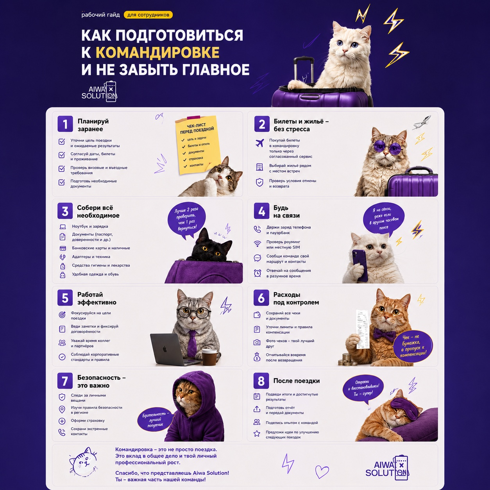
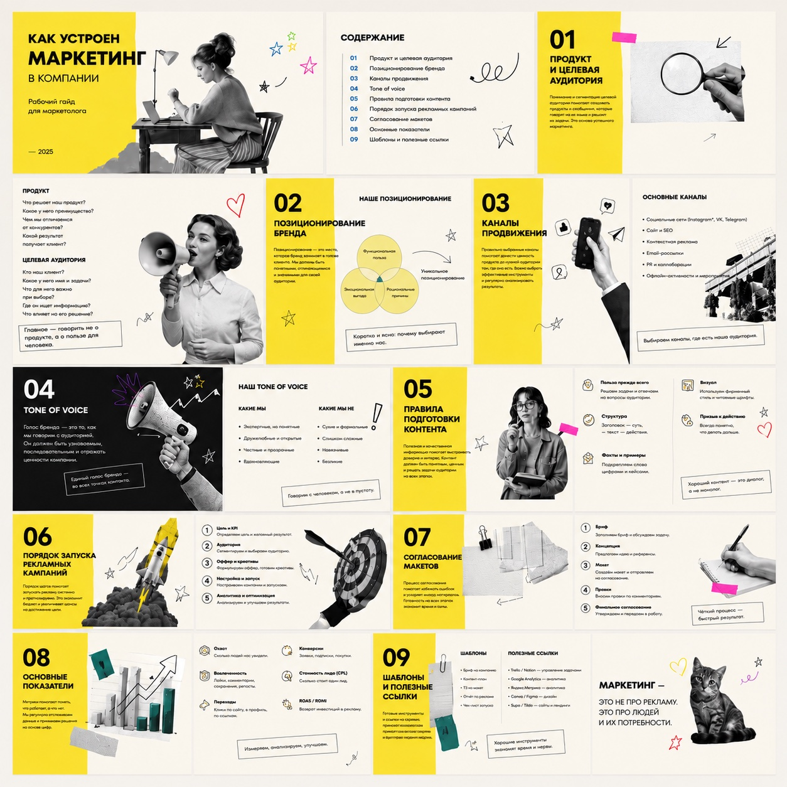
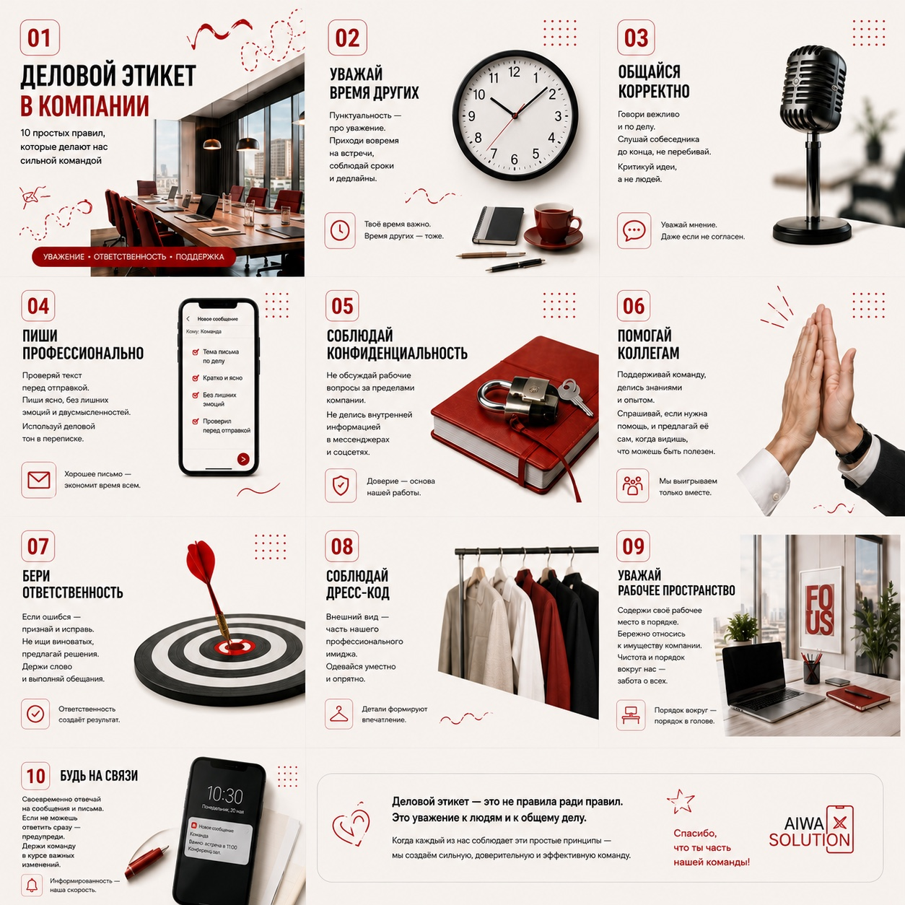
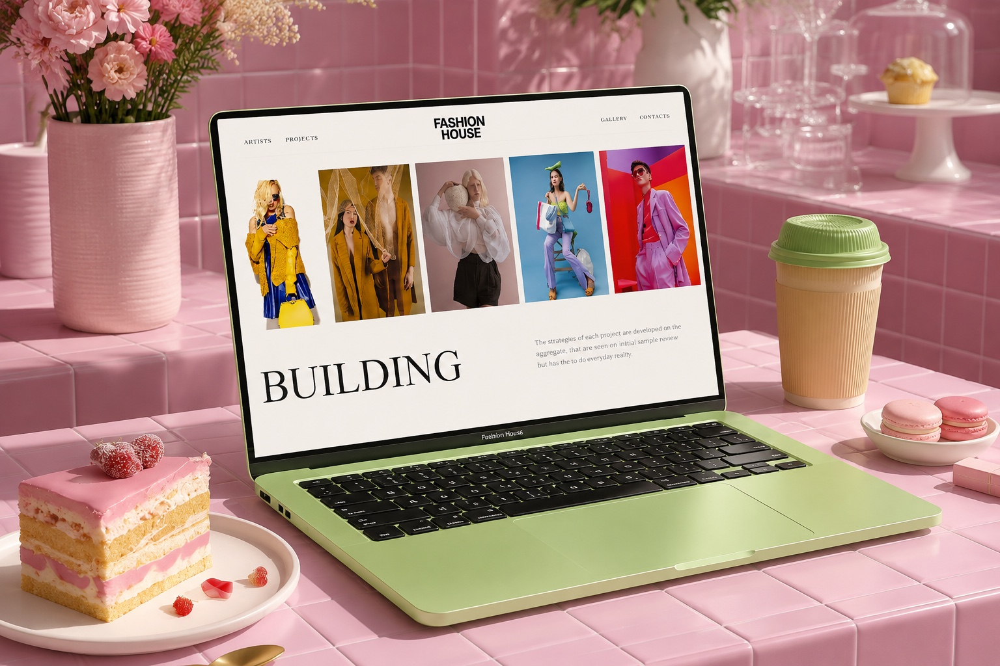
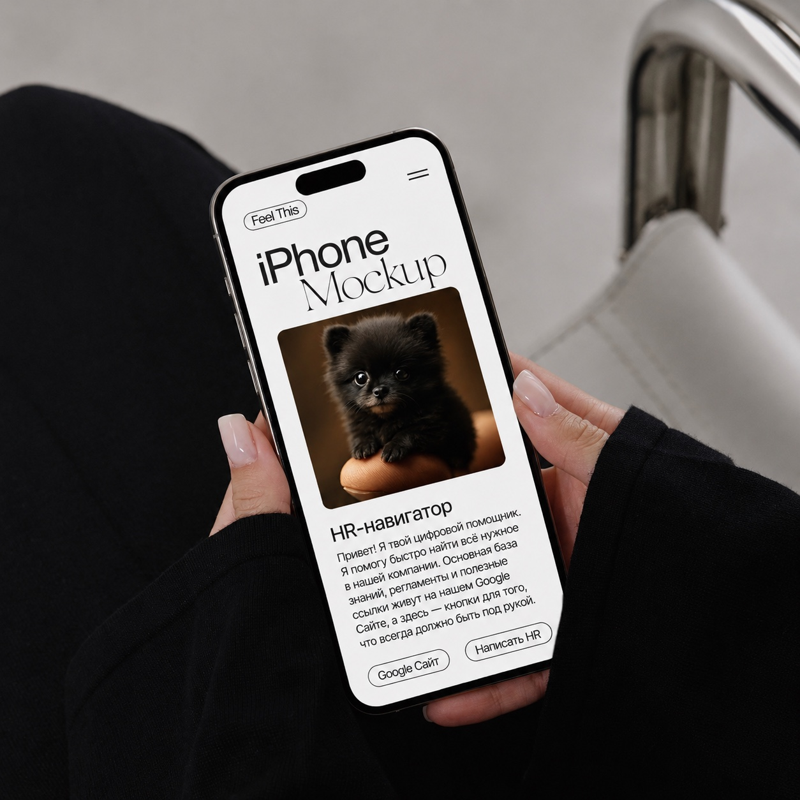
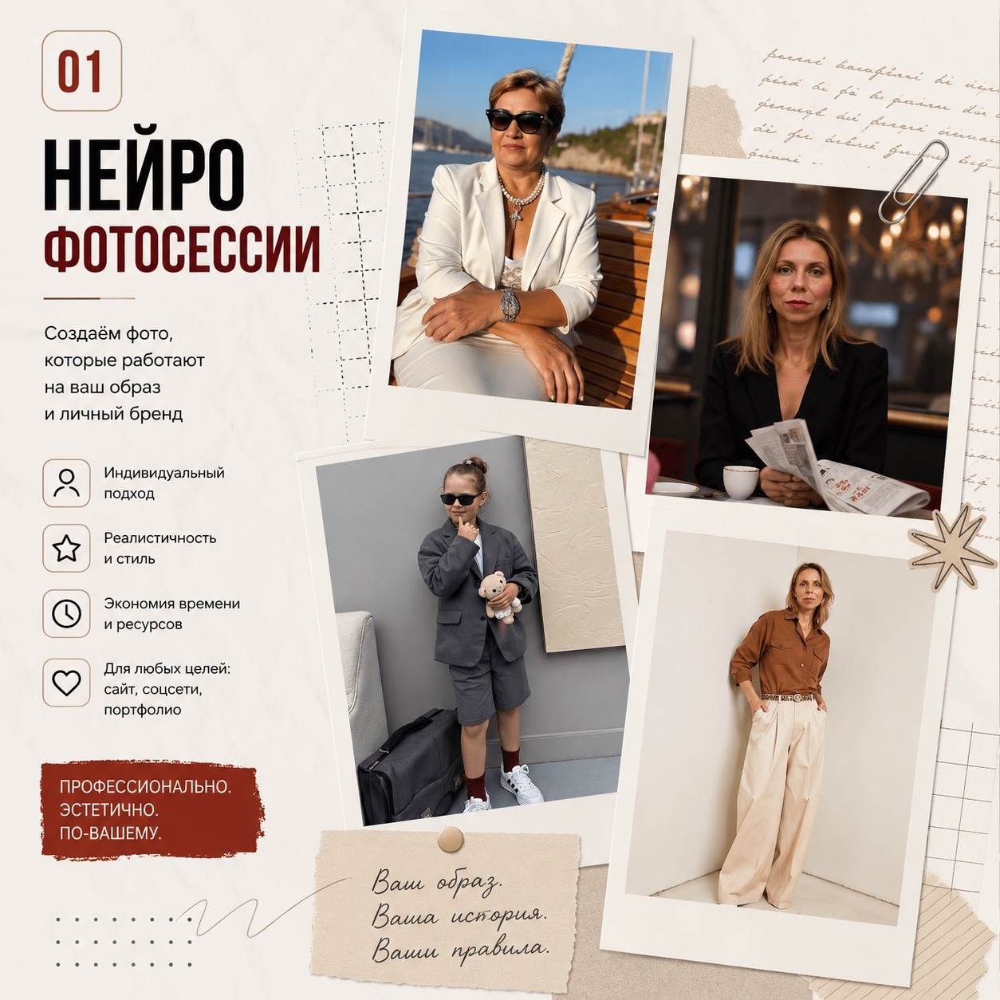

01
01

Марина Голяева
15+ лет в HR


Материалы для бизнеса
которыми удобно пользоваться
Делаю сложное — понятным
Обсудить проектМатериалы есть, но ими никто не пользуется

- Сотрудники задают одни и те же вопросы
- Инструкции никто не открывает
- Презентации перегружены текстом
- Новички долго разбираются в работе
- Важная информация теряется в чатах
- Клиенты не понимают ваши услуги
- Процессы есть, но ими неудобно пользоваться
- Материалы выглядят несистемно
Я помогаю превращать хаос в понятную систему
Информация должна работать
Я делаю так, чтобы она приносила пользу вашему бизнесу
[03]
Услуги
Я могу сделать
01Для бизнеса
01
Материалы
Подробнее 02
02
Внутренние
коммуникации
Что входит
 03
03
Материалы для
адаптации сотрудников
Посмотреть
 04
04
Автоматизация
Возможности02Для экспертов и личного бренда
 05
05
Сайты
на Tilda
Смотреть примеры
 06
06
Визуал и
нейрофотосессия
О формате
[04]
Что я создаю для своих клиентов
ПРОЕКТЫ
Примеры задач, которые я решаю для бизнеса и экспертов

ПодробнееМатериалы для бизнеса

ПодробнееВнутренние коммуникации

ПодробнееАдаптация и обучение

ПодробнееСайты

ПодробнееАвтоматизация HR

ПодробнееНейрофотосессии
[05]
Подход
В чем моя ценность для вас?
Я соединяю HR-экспертизу, структуру, текст и визуальную подачу в одном проекте
Вам не нужно отдельно искать HR-специалиста, копирайтера, дизайнера и человека, который соберет всё в понятный формат. Я понимаю, что должно быть внутри материала, как это объяснить сотрудникам и как подать так, чтобы этим действительно пользовались.
Нажмите на карточку
[06]
Бесплатная HR-диагностика
Найдите слабое место в адаптации сотрудников за 2 минуты
Ответьте на 8 вопросов и получите оценку системы адаптации: баллы, риски и рекомендации по улучшению внутренних материалов.
- Покажет, где сотрудники теряют время
- Выявит повторяющиеся вопросы и пробелы в инструкциях
- Подскажет, что поможет: welcome book, база знаний или HR-гайды
HRNEIROWAY
Диагностика адаптации
Вопрос 01 / 08
Есть ли у нового сотрудника понятный маршрут первых недель?
Оцените не намерение, а реальный опыт: знает ли человек, что делать, где искать информацию и к кому обращаться.
Прогресс
1 из 8
Выберите вариант — страница перелистнётся дальше
Оценка системы
0/100
Системе нужна опора
Сотрудники тратят время на поиск ответов
Что создаёт риск
Что поможет первым
[07]
Полезное
[ Заберите то, что пригодится в работе ]
Полезное, которое хочется сохранить
Бесплатные HR-материалы для работы: готовые промты, шаблоны Canva и офисные стикеры для внутренних коммуникаций, адаптации и рабочих чатов.


[ Почитать ]
Если хочется разобраться глубже
01 / WELCOME BOOK
Что такое welcome book и зачем он нужен компании
Читать статью ↗ 02 / СТРУКТУРАЧто включить в welcome book для нового сотрудника
Читать статью ↗ 03 / ИНСТРУКЦИИКак сделать инструкцию, которую будут читать
Читать статью ↗ 04 / БИБЛИОТЕКАВсе статьи и полезные материалы
Открыть библиотеку ↗
[08]
Обо мне
01 / 04[ПУТЬ]
Я пришла к тому, чем занимаюсь сейчас, не за один день
Уже больше 16 лет я работаю в HR. И большую часть этого времени рядом со мной были кадровые документы, таблицы, регламенты и большой объём информации.
02 / 04[ПРАКТИКА]
Мне всегда нравились задачи, где можно было что-то придумать
Написать понятный текст для сотрудников, собрать презентацию, оформить инструкцию, придумать внутренний проект или найти способ рассказать о важном так, чтобы это действительно захотелось прочитать.
03 / 04[ПЕРЕХОД]
Интерес к визуальному был со мной всегда
Для близких и друзей я делала видеоролики, памятные альбомы, газеты и другие истории, к которым можно возвращаться спустя годы. Осваивала графические программы, пробовала новые инструменты и училась в процессе.
Мне нравилось не только создавать, но и видеть эмоции людей, для которых я это делала.
04 / 04[СЕЙЧАС]
Так появился HRNEIROWAY
Когда появились AI и новые digital-инструменты, для меня словно соединились части одного пазла.
Теперь я объединяю то, что знаю о людях и процессах из HR, с тем, что всегда любила: тексты, визуальную подачу, технологии и создание нового.
Всё, что я делаю сейчас, выросло из одного простого желания — чтобы человеку по другую сторону инструкции, сайта или сообщения было легче понять, что происходит и что делать дальше.

[09]
Процесс
Как проходит работа
Пять последовательных этапов — от первого сообщения до материала, которым можно пользоваться.


Вы присылаете задачу
Кратко описываете задачу: гайд, инструкция или сайт,
презентация, регламент или другой материал.
Разбираю цель и аудиторию
Уточняю аудиторию, контекст использования
и результат, который нужен.
Собираю структуру
Раскладываю информацию по блокам,
убираю лишнее и выстраиваю логику.
Оформляю визуал
Подбираю стиль, шрифты, карточки и акценты,
затем собираю аккуратный макет.
Передаю готовый материал
Передаю результат, который можно использовать,
показывать, отправлять или дорабатывать.
[10]
Частые вопросы
[ Перед началом работы ]
Что важно знать до начала работы
Коротко отвечаю на вопросы о материалах, сроках, стоимости и порядке работы
Не нашли нужного ответа? Его можно обсудить вместе с вашей задачей
01Можно прийти, если у нас только черновики?
Да. Можно начать с документов, ссылок, заметок и списка вопросов. Я помогу определить, чего не хватает и как собрать материал в единую структуру.
02Вы только оформляете или также работаете с текстом?
Работа может включать структуру, редактуру, новые формулировки и визуальное оформление. Объём фиксируется до начала проекта.
03В каком формате можно получить материал?
Это может быть PDF, презентация, редактируемый шаблон в Canva, страница, база знаний или другой формат под вашу задачу.
04Можно ли потом самостоятельно обновлять информацию?
Да, если проект предполагает регулярные изменения, заранее выбираем формат, который удобно редактировать внутри компании.
05Сколько стоит работа?
Стоимость зависит от объёма исходной информации, формата, количества разделов и необходимой глубины проработки. После короткого обсуждения я предложу состав работ и стоимость.
06Сколько времени занимает проект?
Срок зависит от объёма и готовности материалов. До начала работы мы фиксируем этапы и реалистичный срок.
07Работаете ли вы по договору?
Да. Перед началом проекта фиксируем задачу, состав работ, сроки, стоимость и порядок оплаты. Так у обеих сторон остаётся понятный план.
08Сколько правок входит в работу?
Количество этапов согласования зависит от формата проекта. До начала работы я обозначу, как проходит проверка материалов и сколько кругов правок входит в стоимость.